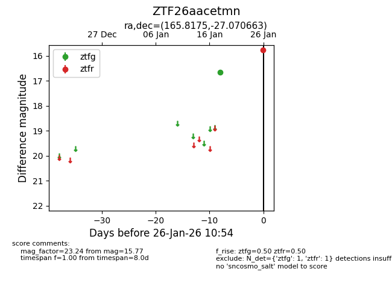
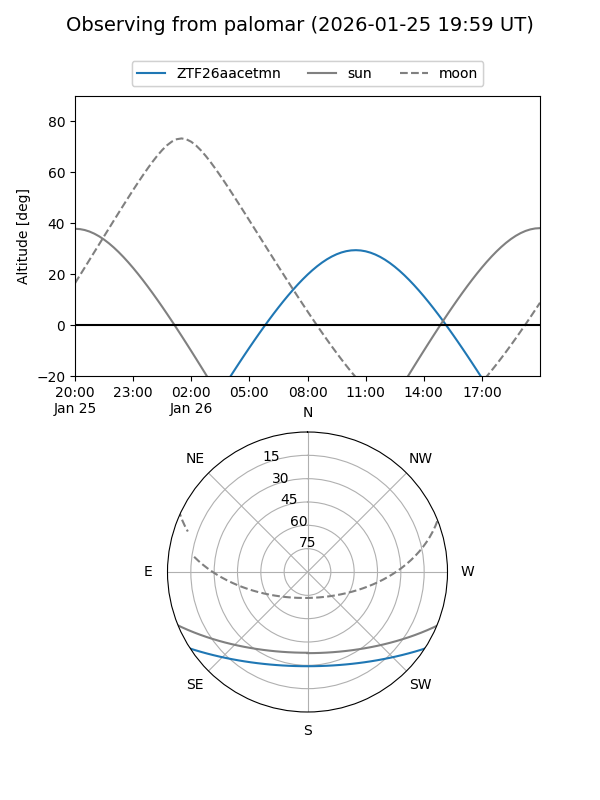

ZTF26aacetmn
Target ZTF26aacetmn at 2026-01-28 11:01
Aliases and brokers:
FINK: link
Lasair: link
ALeRCE: link
alt names
ZTF26aacetmn (ztf,fink_ztf)
Coordinates:
equatorial (ra, dec) = 165.8175,-27.07066
equatorial (HMS+DMS) = 11:03:16.20,-27:04:14.39
galactic (l, b) = (275.0957,+29.88980)
Flags:
Photometry:
last ztfg=16.65, ztfr=15.77
1 ztfg, 1 ztfr detections
Lightcurve

Visibility


Additional plots